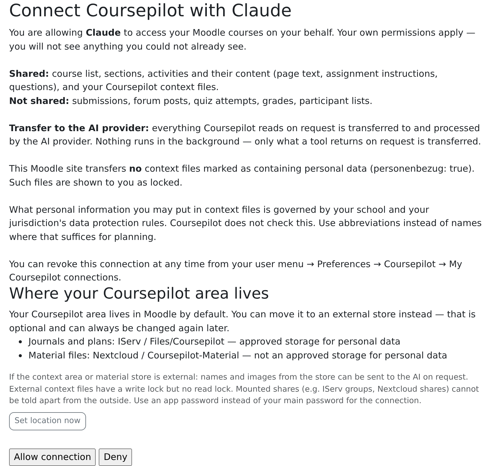
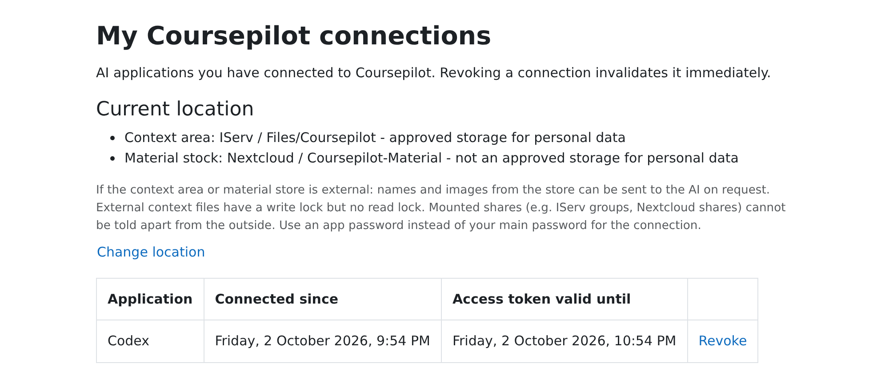
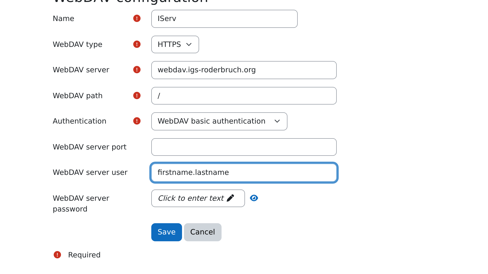
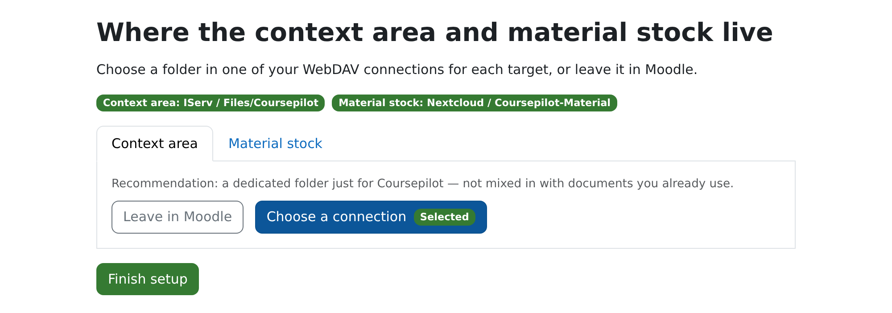
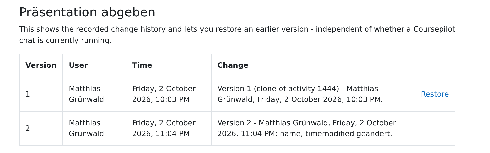

Teacher guide
Coursepilot connects your AI client to your Moodle courses. The AI reads the course as it stands, proposes a plan, and only builds sections, pages, assignments and quizzes once you explicitly agree in the chat. This guide walks you through the setup and your first steps.
Before you start
- Access: Your Moodle admins need to have granted you remote access, usually through a cohort. Without it, the connection fails. Being a teacher in the course isn't enough.
- Address: Your connection address is always
https://<moodle-address>/local/coursepilot/mcp.php, e.g.https://moodle.my-school.org/local/coursepilot/mcp.php. - AI client: Claude is the most reliable option. ChatGPT works too, but OpenAI may change write access for custom connectors depending on plan and interface. Codex is a separate program and is covered on its own below.
- Sign in once: The first time you connect, the Moodle page "Connect Coursepilot" opens. Sign in there with your Moodle account and choose Allow connection. You never have to type in an access key.

Set up the connector in Claude
Applies to claude.ai in the browser and the Claude desktop app. Custom connectors are available on all plans; the free plan allows just one. The red frames in the pictures mark where you click. The screenshots show the German interface.
- Click your name in the bottom left and choose Settings.

Claude: account menu in the bottom left, "Settings" (German UI). - Choose Connectors on the left, then Add › Add custom connector in the top right.

Claude: Connectors › Add › Add custom connector (German UI). - Enter
Coursepilotas the name and your connection address, then Continue.
Claude: enter name and connection address, "Continue" (German UI). - Claude detects the sign-in method by itself: signing in now and registering the OAuth client automatically are already selected. Click Add. The Moodle page "Connect Coursepilot" opens: sign in and choose Allow connection.

Claude: leave sign-in and OAuth client as detected, "Add" (German UI). - In the chat, check in the tools menu that Coursepilot is switched on.
Team or Enterprise account: There, your organization's admins add the connector once. After that, you connect yourself under Settings › Connectors.
Claude Code (terminal): claude mcp add --transport http coursepilot https://<moodle-address>/local/coursepilot/mcp.php, then run /mcp in Claude Code and sign in.
Set up the connector in ChatGPT
These steps apply to the web interface (chatgpt.com). Custom MCP connections are created as plugins. Account and workspace permissions determine whether you can create and use them.
Whether ChatGPT lets Coursepilot write or only read is up to OpenAI, depends on plan and interface, and has changed before. If reading works but creating things in the course doesn't, also check tool permissions and the error message: Moodle permissions or a plugin error can cause this too. Claude is an alternative.
- Open Plugins in ChatGPT. If the feature is missing from your account, check permission to create custom MCP connections with your workspace admins.
- Select the plus icon, then Create custom MCP server.
- Enter
Coursepilotas the name, your connection address, and OAuth for authentication. Confirm the risk warning and select Create as a plugin. - The Moodle page "Connect Coursepilot" opens: sign in and choose Allow connection.
- Install the resulting plugin. Open a new chat, type
@and select Coursepilot. Menu labels can vary by interface.
For a write action, review the displayed tool arguments and explicitly authorize the action. Whether your Plus account actually lets Coursepilot write must be confirmed with a test in your own course.
Add Coursepilot to Codex
The pictures show setup in the ChatGPT desktop app in Codex mode; the command line and the editor extension share the same configuration (~/.codex/config.toml). The screenshots show the German interface.
- Switch from ChatGPT to Codex in the top left and open Plugins.

Codex: choose "Codex" in the top left, then "Plugins" (German UI). - Choose Add › Create custom MCP server in the top right.

Codex: Add › Create custom MCP server (German UI). - Enter
coursepilotas the name, choose Server URL under Connection and enter your connection address. Leave Authentication on OAuth. Tick the box confirming that you understand and want to continue, then click Create as plugin.
Codex: name, server URL, checkbox, "Create as plugin" (German UI). - In the "Connect coursepilot" window, click Continue to coursepilot. The Moodle page "Connect Coursepilot" opens: sign in and choose Allow connection.

Codex: "Continue to coursepilot", then allow in Moodle (German UI).
Command line instead of the app:
codex mcp add coursepilot --url https://<moodle-address>/local/coursepilot/mcp.php
codex mcp login coursepilotThe second command opens your browser with the Moodle page "Connect Coursepilot".
Other MCP clients
Any client that supports remote MCP servers with sign-in works the same way:
- Transport: Streamable HTTP (not SSE, not local/stdio)
- Address:
https://<moodle-address>/local/coursepilot/mcp.php - Authentication: OAuth. The client registers itself; you don't need a client ID or secret.
- Choose Allow connection once on the Moodle page.
Managing connections
All your connections are listed in Moodle under User menu › Preferences › Coursepilot › My Coursepilot connections, and you can revoke each one there. A connection stays signed in for up to 30 days without use.

Connect your own storage (IServ, Nextcloud)
By default, Coursepilot keeps plans, profiles and notes in Moodle under Private files (folder coursepilot). That's enough to get started. If you'd rather keep the files in your school storage, connect it as a WebDAV connection. Requirement: your Moodle admins have enabled WebDAV connections for teachers. If they haven't, the location page shows you a ready-made text you can send to them.
IServ step by step
IServ is a school server platform common in Germany. Other WebDAV storage works the same way with its own server address.
- In Moodle, open any place where you can upload a file (e.g. Private files). In the file picker, choose WebDAV on the left, then Manage.
- Create a new connection and fill it in like this:
Name e.g. IServWebDAV type HTTPS WebDAV server webdav.<iserv-address>, e.g.webdav.igs-roderbruch.org(withouthttps://)WebDAV path /Authentication Basic WebDAV server port leave empty (443 applies with HTTPS) WebDAV server user and password your IServ credentials - Save. The file picker now shows the IServ areas (
Files,Groups…). - Open User menu › Preferences › Coursepilot › Coursepilot: locations for context area and material collection.
- For Context area, choose the IServ connection and create or pick a folder below
Files, e.g.Files/Coursepilot. Other IServ areas can't be selected. - For Material stock, pick a folder the same way (not the same one as for the context area) or Leave in Moodle. Then Finish setup.


Files/Coursepilot.Moodle stores the password of a WebDAV connection in plain text. If your storage offers app passwords, use one instead of your account password.
Nextcloud: the differences
- WebDAV server: your Nextcloud's address without
https://, e.g.cloud.my-school.org. - WebDAV path:
/remote.php/dav/files/<nextcloud-username>/ - Password: an app password from your Nextcloud (Personal settings › Security › Create new app password).
- You can pick any folder, but not the root itself. Best use a folder just for Coursepilot.
- If Coursepilot often reports that the storage is throttling, whoever runs your Nextcloud should check its
trusted_proxiessetting (see the admin page).
If the storage can't be reached for a while, Coursepilot doesn't quietly put anything somewhere else. It only remembers that something is pending, and the AI writes it once the storage responds again.
First steps
How a conversation goes
- Plan: The AI reads the course as it stands (read-only) and proposes a plan, first as a summary, in full wording if you ask.
- Approve: Only once you explicitly agree in the chat does it write to the course. The German skill corpus uses the phrase „ja, so umsetzen“ ("yes, go ahead") as its example; a clear English approval like "Yes, go ahead" works just as well. This is a way of working the AI sticks to, not a technical lock in Moodle. Your safety net is the change history.
- Carry out: Before writing, the AI checks the plan against the course once more. If something no longer fits, it stops and asks you.
Coursepilot keeps the plan, progress and decisions in the context area (the Moodle folder Private files › coursepilot or your own storage), so a later conversation can pick up where you left off. The files are plain text files: you can read, change, delete and share them.
Set up your course context
A short profile of your class and your subject helps the AI hit the right level and style. Setting it up is optional and only starts if you want it to. All it needs is the school year, the class or group and, if you like, the subject.
Set up the context for my class 7a in science.The AI asks for anything missing, shows you the profile before saving and only creates it once you confirm. Student names don't belong in regular profiles. Whether and how they may appear in marked files is up to your school; by default, Coursepilot doesn't pass such files to the AI.
Save design templates
You can have Coursepilot remember activities that worked well as templates, e.g. an assignment with proven submission settings. Coursepilot notes them in the file templates.md in your context area and later copies them into another section or course when you ask. You can also add to the file by hand.
Existing files named vorlagen.md remain readable. Coursepilot does not rename them automatically.
Remember the assignment "Hand in your presentation" from my course Bio 7a as a template for all presentation submissions.Starter prompts
Copy a sentence, replace the parts in square brackets and paste it into the chat. The AI leads the way from there; follow-up questions are normal.
For now, Coursepilot's built-in instructions for the AI are German (#604). The English prompts below work, but the AI may answer in German. Just ask it to reply in English.
Continue working
Let's continue with biology.Looks for open plans for the subject and asks if more than one fits.
Plan a section
Plan the section "[topic]" in my course [course name]: [number] lessons, an info page, an assignment with a submission, and a short mini check at the end.Then review it with "Show me the full text of the info page." and approve with "Yes, go ahead."
Create a quiz and questions
In my course [course name], add a mini check with five multiple-choice questions on [topic] to the section "[section]". Show me the questions before you create them.Add material
My worksheet is attached. Add it as a file to the section "[section]" in my course [course name] and write a short task instruction to go with it.Attach the file to your message first. Coursepilot then puts it on a workbench in Moodle and adds it to the course from there.
Crop an image
Crop the figure [short description] from [file name] and put it on the page "[page name]" in my course [course name].The AI shows you a preview of the crop before adding it. Cropping works with photos and scans, not with SVG graphics.
Clone an activity
Copy the assignment "[name]" from my course [source course] to the course [target course], section "[section]".Settings and content come along; submissions and other student data don't. The AI tells you about any completion conditions that were carried over.
Restore a version
Show me the versions of the page "[name]" in my course [course name] and bring back the version from [date].Other activity types
In my course [course name], add a glossary "Key terms [topic]" to the section "[section]".Besides text and media area, page, URL, folder, file, choice, forum, assignment and quiz, Coursepilot can create other installed types such as book, glossary or checklist, but can't change them afterwards. If such an activity needs to change, Coursepilot adds a new version right after it and hides the old one.
When something doesn't work: tool gaps
Not every setting and not every activity or question type can be set through Coursepilot, e.g. lessons, SCORM packages, H5P activities or special settings of some submission types. In that case, the AI says so openly and describes the steps to do it by hand in Moodle: where to click and what to enter. After that, the conversation carries on as usual; the AI reads the new state too.
Question types other than multiple choice (e.g. cloze, matching, STACK) are created through Moodle's XML import. If you like, Coursepilot notes what worked in a notes file in your context area, so it goes faster next time.
I'd like [setting or activity]. If Coursepilot can't do it itself, walk me through it in Moodle step by step.Undoing changes
Coursepilot keeps a change history for every activity, including changes made by hand in the Moodle form. There are two ways to bring an earlier version back:
- In the chat: with the starter prompt "Restore a version".
- In Moodle, without a chat: In the course, open Coursepilot: change history, choose the activity and version, then Restore.
Restoring saves the old state as the new latest version; the activity stays the same and links to it keep working. The history isn't complete: quiz questions beyond their order, grades and restored course backups aren't in it; for book, glossary and similar types only the basic settings are, not chapters or entries. Entries are deleted after one year unless your school has set something else.

What the AI sees and what it doesn't
| The AI sees | The AI doesn't see |
|---|---|
| Courses you teach; sections, activities and their content (page text, assignment instructions, questions); your Coursepilot files in the context area; material you give it. | Submissions, forum posts, quiz attempts, grades, participant lists. There's no tool for them; an automated test makes sure of that. Files marked as containing personal data, unless your school allows it. |
Coursepilot itself sends nothing to an AI provider. But whatever the AI reads through Coursepilot goes to the provider of your AI client (e.g. Anthropic or OpenAI) and is processed there. That's why student names don't belong in plans or material unless your school explicitly allows it. The AI always works with your own Moodle permissions.
Email template for colleagues
Copy and adapt (Moodle address, name):
Subject: Build Moodle courses with AI support – try Coursepilot
Hi everyone,
Our school now has Coursepilot. It lets you connect an AI chat (e.g. Claude or ChatGPT) to your Moodle courses. The AI reads the course as it stands, proposes a plan and only creates sections, pages, assignments and quizzes once you explicitly approve. You can undo every change in Moodle.
The AI doesn't see submissions, grades or participant lists. Coursepilot is still in beta.
Getting started:
1. Drop me a quick note and your access in Moodle will be switched on.
2. Follow the guide: https://matthiasgruenwald.github.io/moodle-coursepilot/en/teachers.html
3. Connection address: https://[moodle-address]/local/coursepilot/mcp.php
To begin, a sentence like "Plan the section '[topic]' in my course [course name]" is all you need.
Just get in touch if you have questions.
Best wishes
[Name]